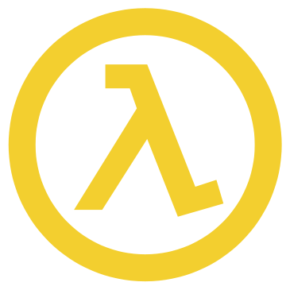

:ruby.to_clj
Created by niquola / @niquola
deep insight team
october 2013
Teamlead @ hospital-systems

FP is future
- essential and accidental complexity
- concurency
The Last Programming Language
Robert Martin (uncle bob)
(LISP functional homoiconic)
Красота спасет мир
ФМ Достоевский
History (Mon, 13 Feb 2006 13:43:02 +0900)
Ruby is a language designed in the following steps:
* take a simple lisp language (like one prior to CL).
* remove macros, s-expression.
* add simple object system (much simpler than CLOS).
* add blocks, inspired by higher order functions.
* add methods found in Smalltalk.
* add functionality found in Perl (in OO way).
So, Ruby was a Lisp originally, in theory.
Let's call it MatzLisp from now on. ;-)
Ruby share with lisp
- phylosophy
- dynamism
- metaprogramming & dsl